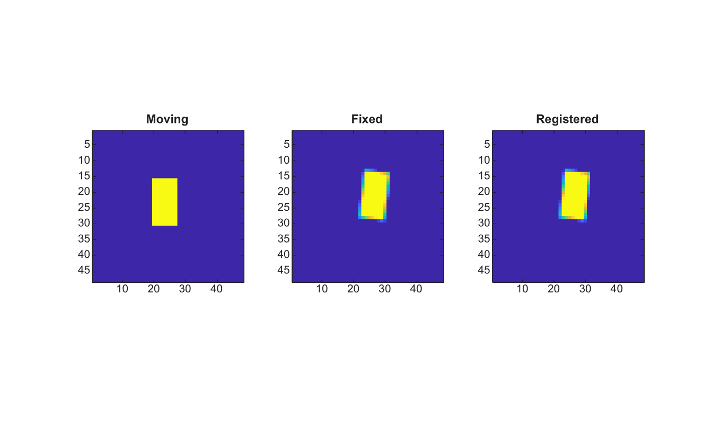

tform = imregtform(moving, fixed, transformType, optimizer, metric)
tform = imregtform(..., Name, Value)
| Parameter | Description |
|---|---|
| moving | Moving grayscale or RGB image. |
| fixed | Fixed grayscale or RGB image with the same size as moving. |
| transformType | Transformation type: translation, rigid, similarity or affine. The affine mode estimates translation, rotation, independent X/Y scale and shear. |
| optimizer | Optimizer structure created by imregconfig or a compatible structure. |
| metric | Metric structure or metric name: MeanSquares or Correlation. |
| Parameter | Description |
|---|---|
| tform | Affine 2-D transformation structure that maps moving toward fixed. |
imregtform estimates a small 2-D registration transform without external dependencies. Translation uses phase correlation. Rigid, similarity and affine modes use a deterministic angle, scale and shear search scored by the selected metric.
I=zeros(48,48); I(16:30,20:27)=1;
cx=24.5; cy=24.5; theta=6*pi/180; c=cos(theta); s=sin(theta);
T=[1 0 0;0 1 0;-cx -cy 1]*[c s 0;-s c 0;0 0 1]*[1 0 0;0 1 0;cx cy 1]*[1 0 0;0 1 0;3 -2 1];
J=imwarp(I,T,'linear','OutputView','same');
[optimizer,metric]=imregconfig('monomodal');
optimizer.AngleSearch=10;
tform=imregtform(I,J,'rigid',optimizer,metric);
K=imwarp(I,tform,'linear','OutputView','same');
figure; subplot(1,3,1); imagesc(I); axis image; title('Moving');
subplot(1,3,2); imagesc(J); axis image; title('Fixed');
subplot(1,3,3); imagesc(K); axis image; title('Registered');
| Version | Description |
|---|---|
| 2.0.0 | initial version |